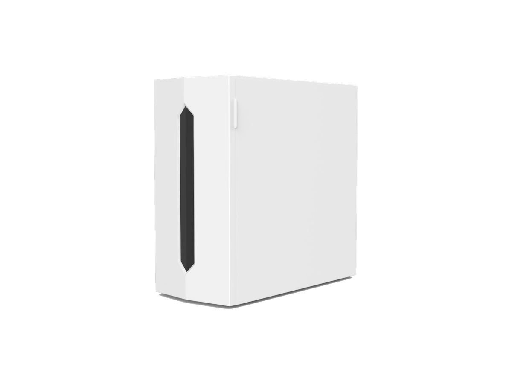

Под мойку
Под мойкуRP-U07
RO-очиститель под мойку 400–600 GPD
SKU: RP-U07
MOQ: уточняйте при запросе
Главная/Продукция/Системы RO под мойку/ RP-U06

Системы RO под мойку
RO с малой мембраной и встроенным баком — четыре опции. Двухдвигательная модель возглавляет серию.
RP-U06 — это семейство RO с малой мембраной и встроенным баком: компактная мембрана RO в паре с внутренним баком для воды, поэтому бак обеспечивает высокий расход без большой мембраны. Четыре опции следуют одной идее и различаются размером бака, мембраной и нагревом: двухдвигательная модель (мембрана 400G, напорный бак 2 л, двойные выходы питьевой воды и воды для мытья на кухне, расход чистой воды 1.05 л/мин); бак 4.1 л (100G, встроенный бак чистой воды 4.1 л, 4–9 л/мин); бак 8 л (50–150G, встроенный бак 8 л с УФ, 2.5–5 л/мин, с опциональной версией мгновенного нагрева на 4 температуры); и бак 7.5 л (75/100G, встроенный бак чистой воды 7.5 л со статическим УФ, 5 л/мин, замена картриджа боковой вставкой, с опциональной версией толстоплёночного нагрева в кране). Характеристики подтверждаются для каждой модели и заказа.
Напряжение / частота настраиваются под страну назначения. Другие конфигурации подтверждаются для каждого заказа.
RP-U06 — это семейство RO с малой мембраной и встроенным баком: компактная мембрана RO в паре с внутренним баком для воды, поэтому бак обеспечивает высокий расход без большой мембраны. Ведущая опция — двухдвигательная модель (мембрана 400G, напорный бак 2 л, двойные выходы питьевой воды и воды для мытья на кухне, расход чистой воды 1.05 л/мин, начальный расход более 4.2 л/мин в первые 3 секунды). Три другие опции следуют той же идее: бак 4.1 л (100G, 4–9 л/мин), бак 8 л с УФ (50–150G, 2.5–5 л/мин) и бак 7.5 л со статическим УФ (75/100G, 5 л/мин). Все четыре опции имеют номинальный объём очищенной воды 4000 л.
Каков минимальный объём заказа?
Первый заказ — 200 единиц на модель, повторные заказы — 500 единиц.
Можно ли заказать образец до оптового заказа?
Да. Образцы готовы через 15 дней, стоимость образца возвращается при первом оптовом заказе. Оптовые заказы занимают 40 дней после утверждения образца и отгружаются FOB Шэньчжэнь.
Какой вариант выбрать?
Указывать RP-U06 и уточнять опцию: двухдвигательная модель (400G, напорный бак 2 л, двойные выходы), бак 4.1 л (100G), бак 8 л с УФ (50–150G, опция нагрева) или бак 7.5 л (75/100G, статическое УФ).
Четыре опции встроенного бака — указывать RP-U06 и уточнять опцию (двухдвигательная модель, бак 4.1 л, бак 8 л или бак 7.5 л).
Наведите курсор на изображение варианта, чтобы увидеть его спецификации. На сенсорных экранах коснитесь изображения.



Полные характеристики каждой разновидности, рядом. В таблице характеристик ниже приведены значения RP-U06.
| Спецификация | RP-U06-1 — двухдвигательная модель (YRO-400G) | RP-U06-2 — бак 4.1 л (M2503R) | RP-U06-3 — бак 8 л, опция нагрева (M922RN) | RP-U06-4 — бак 7.5 л (AM601R) |
|---|---|---|---|---|
| RO-мембрана | 400G | 100G | 50–150G (доступно 200G) | 75/100G |
| Бак | Бак давления 2L | Встроенный бак чистой воды 4.1L | Встроенный бак чистой воды 8L с УФ | Встроенный бак чистой воды 7.5L, статическое УФ 99.9% |
| Расход на выходе | Чистая вода 1.05 L/min; начальный поток >4.2 L/min в первые 3 секунды | 4–9 L/min | 2.5–5 L/min, эквивалент ~1900G | 5 L/min |
| Выходы | Два выхода: питьевая вода + вода для кухни | Один выход | Подтверждается по заказу | Один выход |
| Нагрев | Без нагрева | Без нагрева | Опционально: мгновенная горячая вода на 4 температуры, 2100W, 20 L/h | Опционально: толстоплёночный нагрев крана, 2100W, 25/45/65/85/100°C |
| Размеры (Д×Ш×В) | 467 × 160 × 384 mm | 352 × 160 × 319 mm | Подтверждается по заказу | 415 × 187 × 392 mm |
| Номинальный объём очищенной воды | 4000 L | 4000 L | 4000 L | 4000 L |
| Фильтрация | Композит PAC + RO (2 картриджа) | PPC + RO + пост-уголь | PPC + RO + C | ПП + композит с активированным углём + RO + пост-уголь (3 картриджа, 4 слоя) |
| Напряжение / частота | Настраивается под страну назначения | Настраивается под страну назначения | Настраивается под страну назначения | Настраивается под страну назначения |
22 строк спецификаций из каталога ROPureOEM.
| RO-мембрана | 400G |
|---|---|
| Фильтрация | Композит PAC + RO (2 картриджа); универсальный фильтрующий материал |
| Поток чистой воды | 1.05 L/min |
| Расход чистой воды | 2.0 L/min |
| Начальный расход чистой воды | >4.2 L/min в первые 3 секунды (0.25 MPa, водопроводная вода 25 °C) |
| Общий номинальный объём очищенной воды | 4000 L (чистая вода); 4000 L (очищенная вода) |
| Водоэффективность | Класс 1; коэффициент производства чистой воды 0.65; степень обессоливания ≥93% (0.25 MPa, водопроводная вода 25 °C, через 30 минут) |
| Номинальная мощность | 72 W |
| Шум | ≤55 dB(A) звуковая мощность |
| Напорный бак | 2 L |
| Для крана | Два выхода: питьевая вода + вода для кухни; серый механический кран с ручкой-регулятором, открытая часть 60 см |
| Нагрев | Нет |
| Напоминание о сроке службы фильтра | Время включения + время работы насоса (двойной расчёт) |
| Промывка | Автоматически; без застоявшейся воды (программа промывки, без обратного тока) |
| Определение TDS / стерилизация | Нет |
| Память при отключении питания | Да |
| Рабочее давление перед мембраной | 0.4–0.8 MPa |
| Применимые давление / температура воды | 0.1–0.4 MPa; 5–38 °C |
| Защита от поражения электрическим током | Класс II |
| Размеры | 467 × 160 × 384 mm |
| Вес нетто | 9.5 kg |
| Вес брутто | 10.3 kg |
| Размеры упаковки | 565 × 231 × 505 mm |
| Напряжение / частота | Настраивается под страну назначения (номинал 220 V~, 50 Hz) |
| Другие конфигурации | Подтверждается по заказу |
Спецификации взяты из каталога ROPureOEM. Если значение ещё не подтверждено, оно указано как «Подтверждается при заказе» — мы не публикуем неподтверждённые цифры.
Под мойкуRO-очиститель под мойку 400–600 GPD
SKU: RP-U07
MOQ: уточняйте при запросе
 Под мойку
Под мойкуRO под мойку с накопительным нагревом
SKU: RP-U08
MOQ: уточняйте при запросе
 Под мойку
Под мойкуВысокопроизводительный RO-очиститель с фронтальным доступом
SKU: RP-U09
MOQ: уточняйте при запросе
 Под мойку
Под мойкуRO-очиститель с тремя картриджами
SKU: RP-U11
MOQ: уточняйте при запросе